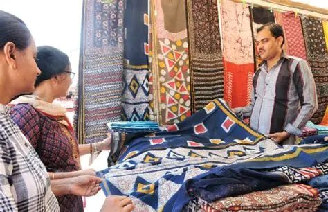

Festivals of Solapur
Siddheshwar Yatra
One of the largest festivals in the city, celebrated in honor of Shri Siddheshwar. Devotees participate in religious ceremonies and grand processions during this festival.

Ashadhi Wari
Ashadhi Wari is a famous pilgrimage where devotees walk long distances to reach Pandharpur while singing devotional songs and carrying palkhis. This spiritual journey reflects deep faith and devotion.

Local Traditions
The culture of Solapur reflects a mix of Marathi and Kannada traditions. People celebrate religious festivals, community gatherings, and cultural programs throughout the year.
Music, devotional songs, and temple rituals are an important part of everyday life in the region.
Handloom and Textile Heritage
Solapur is famous for its traditional textile products such as:
-
Solapur Chaddars (bed sheets)

-
Cotton Towels

-
Handloom Fabrics

These products are well known across India for their quality, durability, and traditional designs.